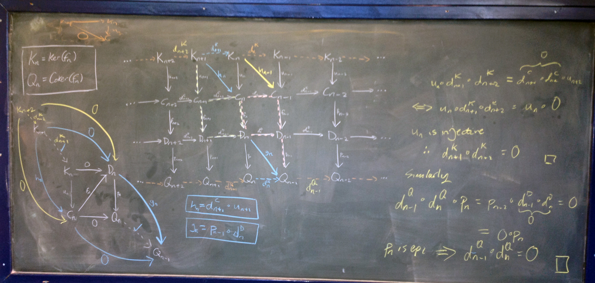

Areas
- Commutative algebra
- Stanley–Reisner theory
- Graph theory and edge ideals
- Symbolic powers
- Monomial ideals
- Homological methods

Research program
My interests lie in commutative algebra and its interactions with combinatorics, with emphasis on Stanley–Reisner theory, graph-theoretic aspects of ideals, monomial ideals, and symbolic powers.
Soumyadeep Misra.